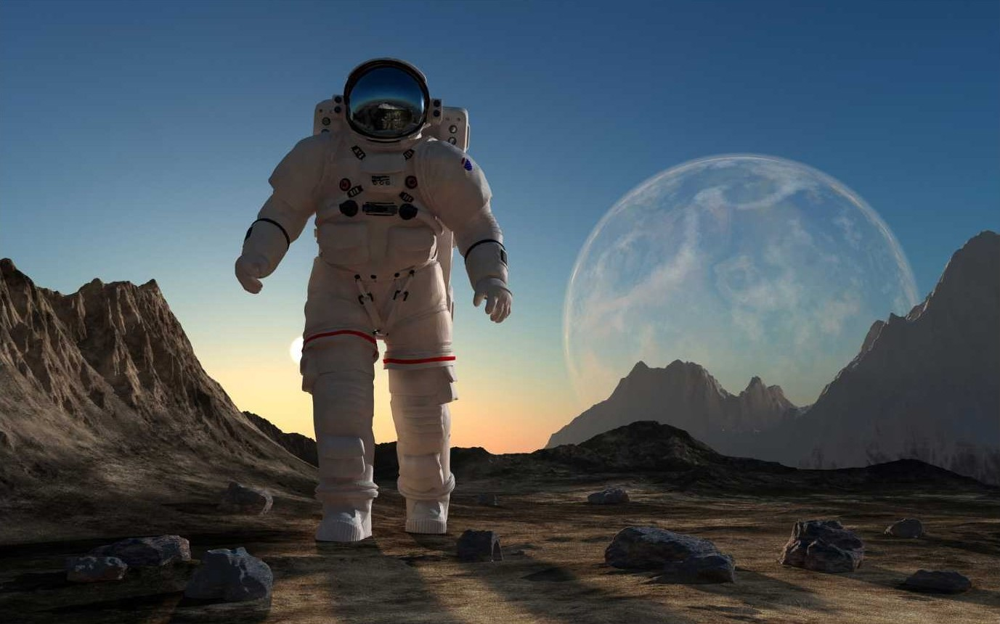

Visiting Professor of Aeronautics
We are delighted to announce that Professor Sheila Widnall, esteemed faculty member at the Massachusetts Institute of Technology and a renowned leader in the field of aerospace engineering, will be delivering a special series of three lectures.

Professor Widnall will guide us through the fascinating history and evolution of aeronautics, highlighting key milestones, transformative technologies, and the visionary individuals who shaped the field.
She will also share her insights into the current trends and future directions of aeronautics, exploring emerging innovations and the exciting possibilities that lie ahead in this rapidly advancing 'space'. We warmly invite all students, faculty, and enthusiasts to join us for this inspiring and thought-provoking series
Opening Hours
Monday-Friday: 10:00-16:00
Saturday: 11:00-15:00
Sunday: 12:00-15:00
Admission
The entrance is free for all. There are guided tours of the museum that leave every hour. These tours are 70 NOK per person and include a handy printed guide of the museum. If you would like to organise a guided tour for your group of 6 or more people, please contact us to arrange the tour.
Accessibility
The museum has wheelchair accessibility ramps. It also has audio guides and braille display signs for the visually impaired.
Food and drink
There is a café attached to the museum where you can get light lunches, soft drinks, coffee, snacks and more.
Shop
Our shop offers a range of memorabilia from the museum as well as great gifts and activity packs that allow you to continue to explore science even after you've left the museum.